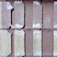
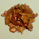
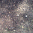
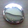
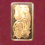
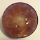
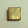
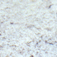
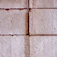
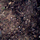

TMJ Item Database

Brick
Made from kiln-fired mud, bricks can be assembled with mortar to construct buildings.
 Clay Pot
Made on a pottery wheel and fired in a kiln, pots can easily hold liquids for transport and trade.
Clay Pot
Made on a pottery wheel and fired in a kiln, pots can easily hold liquids for transport and trade.
 Concrete
Poured as a liquid of sand and pebbles, concrete hardens into a solid cement useful in foundations of structures.
Concrete
Poured as a liquid of sand and pebbles, concrete hardens into a solid cement useful in foundations of structures.
 Copper Bar
This metal can be cold-hammered into useful items or alloyed with gold to lower the cost of jewelry.
Copper Bar
This metal can be cold-hammered into useful items or alloyed with gold to lower the cost of jewelry.

Copper Ore
This soft, reddish metal can be cold-hammered into many useful goods.

Dirt
There is little value to this since anyone can obtain it by just looking downward and digging.
Flower
These may hold medicinal or nutritional uses... or they can be poisonous.

Gallium Ore
This metal is hard at cool temperatures but will melt when held in a hand. It can substitute silver on glass to construct mirrors.
 Gemstones
These can have widely varying values, depending on cut, clarity, color, size, and type. They can be worthless or priceless in both intrinsic and utilitarian aspects.
Gemstones
These can have widely varying values, depending on cut, clarity, color, size, and type. They can be worthless or priceless in both intrinsic and utilitarian aspects.
Glass
Fired sand will form into a liquid that hardens into the brittle, transparent substance. Glass has many useful purposes from windows to mirrors. Its relative resistance to both corrosive and caustic substances makes it an excellent container for storage, as well.

Gold Bar
This soft, precious metal is commonly used in currency and jewelry due to its unique color and ability to resist corrosion.
 Grass
It helps prevent ground erosion and feeds many farm animals.
Grass
It helps prevent ground erosion and feeds many farm animals.

Iron Ingot
This common metal is prone to oxidize into rust by has many useful purposes in construction.

Lodestone
These naturally magnetic stones are useful at detecting some types of metals, while also verifying the value of precious metals.
 Lumber
Several types of trees are useful on construction when cut into rectangular strips. The strengths vary by type of tree.
Lumber
Several types of trees are useful on construction when cut into rectangular strips. The strengths vary by type of tree.
 Mirror
This glass backed with silver or gallium makes a perfect reflection of light.
Mirror
This glass backed with silver or gallium makes a perfect reflection of light.
 Pearls
These oyster gemstones have intrinsic value that depends on size and shape.
Pearls
These oyster gemstones have intrinsic value that depends on size and shape.
 Rock
This large chunk of stone can be used as a weapon or as decoration.
Rock
This large chunk of stone can be used as a weapon or as decoration.

Sand
These fine silicon particles can be made into glass at high temperatures.
 Silver Bar
This precious metal is great for backing glass to make mirrors, and its softness permits manufacturing of coinage or jewelry.
Silver Bar
This precious metal is great for backing glass to make mirrors, and its softness permits manufacturing of coinage or jewelry.
 Stone
Stones are an ingredient in concrete, used in construction.
Stone
Stones are an ingredient in concrete, used in construction.

Stone Block
Carved from a rock, these blocks can be used for construction.
 Stucco
This sprayed-on concrete makes a protective exterior siding to walls.
Stucco
This sprayed-on concrete makes a protective exterior siding to walls.
 Titanium Bar
This metal has the weight of aluminum but nearly the strength of iron alloys.
Titanium Bar
This metal has the weight of aluminum but nearly the strength of iron alloys.

Topsoil
This nitrogen-rich dirt is great fuel for plant growth in agriculture.
Nintendo trademarks and copyrights are properties of Nintendo.
Opera is a product of Opera Software ASA.
This website is ©2009-2023 HullBreach Studios Ltd. All rights reserved.
Members are responsible for their own content.
No account information will be given to third-parties.
Warning: include(includes/section.my_alert_popup.php): failed to open stream: No such file or directory in /srv/users/hullbreach-studios/apps/dsi-paint/public/includes/footer.inc.php on line 10
Warning: include(): Failed opening 'includes/section.my_alert_popup.php' for inclusion (include_path='.:/opt/sp/php7.4/lib/php') in /srv/users/hullbreach-studios/apps/dsi-paint/public/includes/footer.inc.php on line 10